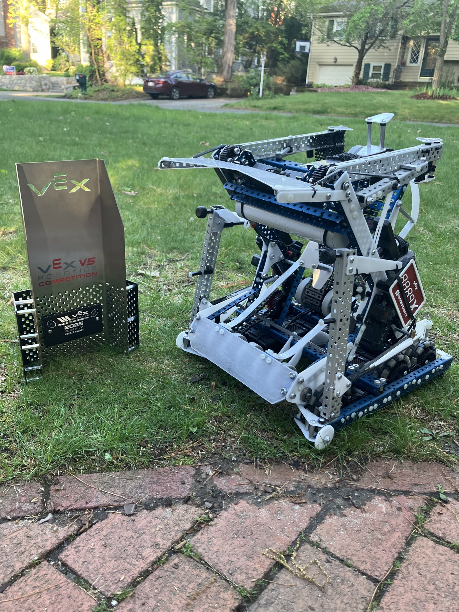
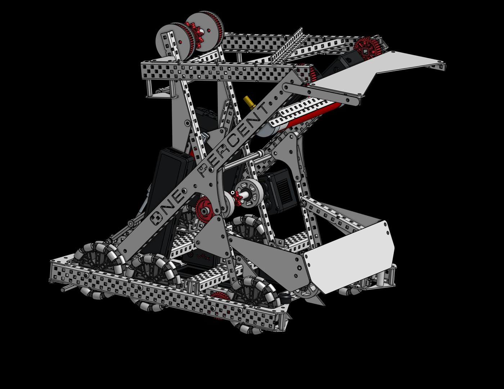
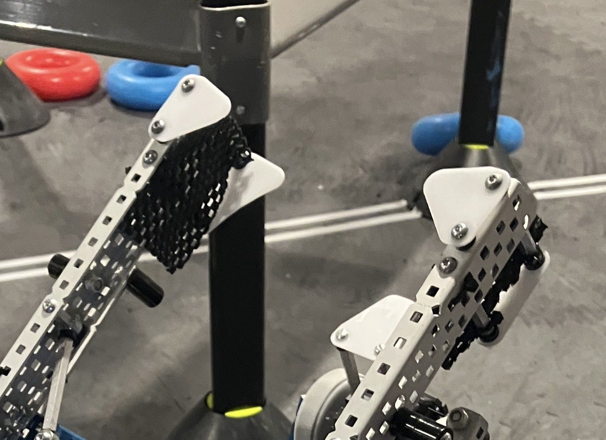
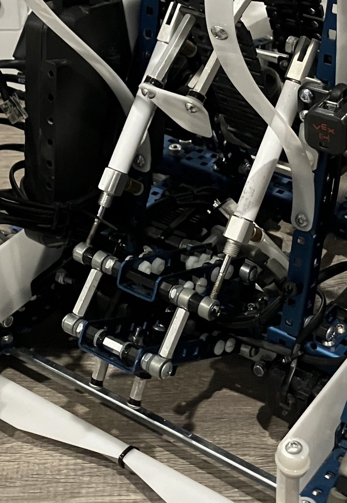
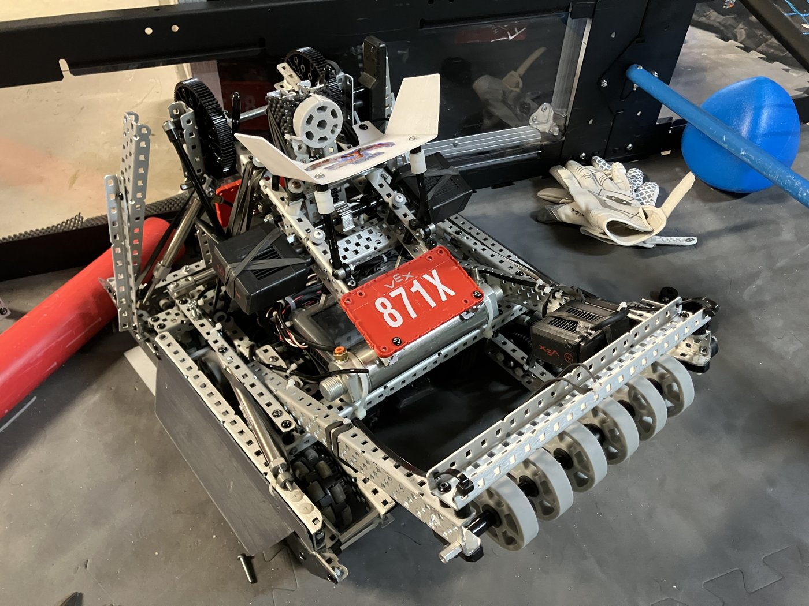
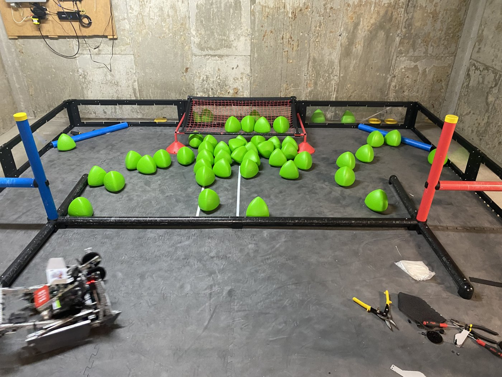
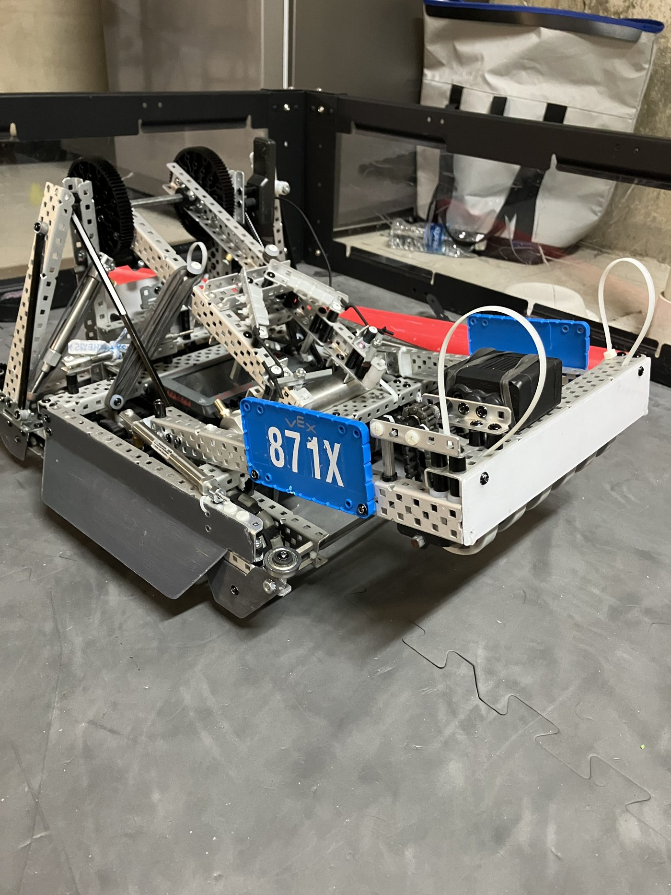
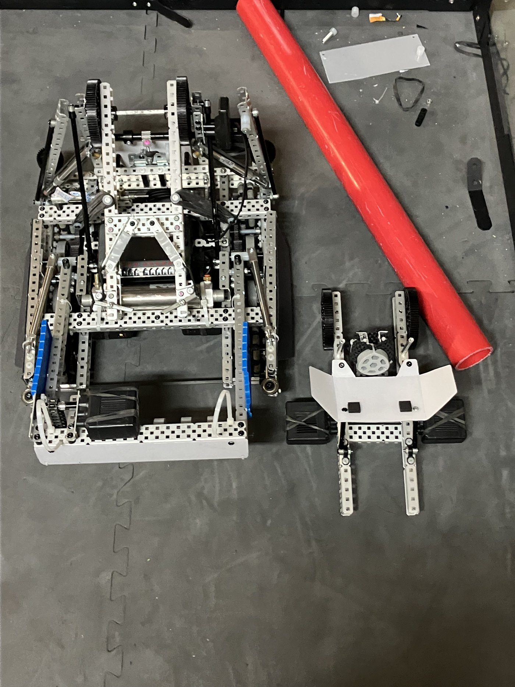
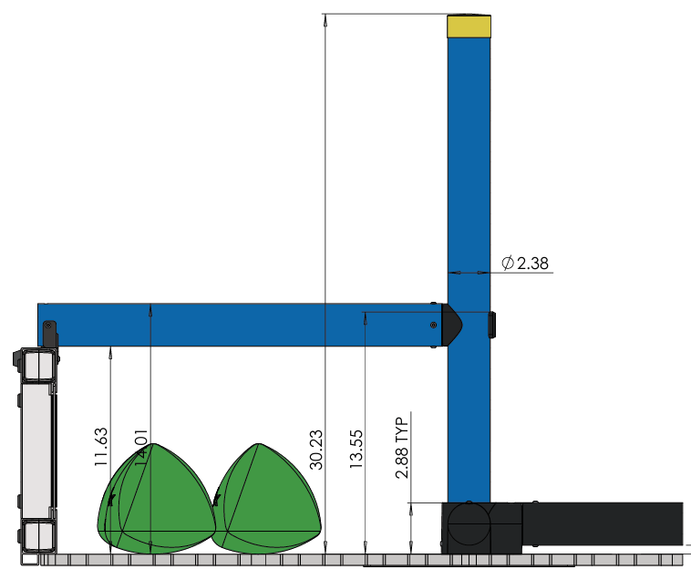
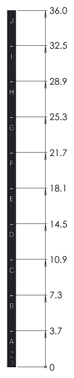

VEX Robotics
Four seasons of competitive VEX V5RC robotics as lead mechanical engineer and captain. Ten robots designed, fabricated, and tuned by hand; below are the two most prominent builds, focused on the hardware: the mechanisms, the problems we hit, and how we solved them.
VEX V5RC is a student competition with a new game each season, played as head-to-head matches (autonomous + driver control) and Robot Skills (a 60-second solo run). Every robot starts each match inside an 18" × 18" × 18" cube and lives within an 88 W motor-power limit, which puts a premium on light, efficient, reliable mechanisms.
My role: Lead mechanical engineer and team captain across four V5RC seasons: 10 robots designed, fabricated, and tuned by hand (hardware, not programming). The two builds below are the standouts.
High Stakes · 2024–2025
8889X
The game (High Stakes): alliances score rings on stakes and climb the ladder. A ring on a stake is worth 1 point and a top ring 3 points, plus a +6 autonomous bonus. The endgame ladder is tiered A–F (0, 5, 10, 15, 20, up to 25 points), where a higher climb is often the match decider.
Overview
My last VEX robot, and it distilled four seasons into two priorities: simplicity and reliability. Rather than chasing every mechanism, it focused on the core job (intaking rings and scoring them on the stakes) and on being effortless to drive, "a second body to the driver" when matches got rough. It still climbed for the endgame, but the real edge was doing the fundamentals flawlessly, every match.
Design & build
Scope was kept deliberately narrow: intake rings, score them on the stakes, make it easy to drive. Four mechanisms carried the robot: an over-center locking clamp for the mobile goal, a passive spring-up hang, a ring-holding arm, and a foldable auto-aligner, each chosen to be light, dependable, and driver-friendly.


Challenges & solutions
- A clamp that never unclamps or gets stolen. An over-center locking clamp modeled on household locking pliers. It never released under opponent pressure: zero goals stolen from us all season, and we stole goals off non-locking clamps about five times.
- A very light, easy hang. A passive hang that springs up when the arm lifts, locking in the bottom endgame tier every time. It kept the robot to just 13–14 lbs vs the typical 16–17, about 4 lbs saved, freeing a faster drive ratio to out-run opponents.
- Holding a second ring while the arm is up. The single chained intake motor locks when a ring reaches the top, so the arm itself had to hold that ring. Solution: thickness-tuned sticky mats inside the arm let the driver carry two rings at once, saving ~2–3 seconds per cycle.
- Lining up on the goals without blocking the arm. A foldable plastic auto-aligner drops down so the arm can reach full rotation to stack goals. Light but durable, it snapped the robot into position on the tall stakes, saving ~5 seconds per score.
Mechanisms in action

Results
- Earned the Create Award at the World Championship.
- Took 1st seed and reached the semifinals at the Worlds divisional level, going 10–0 in qualification before the elimination rounds.
- Needing no major fixes all event, the team could put its energy into strategy, scouting, and alliance synergy instead of repairs.
Watch
Engineering notebook (PDF)

Over Under · 2023–2024
871X
The game (Over Under): alliances score triballs and race for elevation. A triball in a goal is worth 5 points and in a zone 2 points, plus a +6 autonomous bonus. At the buzzer each robot's elevation is ranked into tiers A–F (0, 5, 10, 15, 20, up to ~25–30 points at the top), which can strongly swing the final score.

Overview
871X's Over Under robot was built to compete in both formats at once, which reward very different things. Skills favored sending triballs across the field fast; matches didn't, since anything launched over just got stolen, so elevation mattered far more, and a high D-tier hang was rare in our region and worth big points. The answer was a modular robot: a slapper (catapult) tuned for skills that detaches and swaps with a side-pole hang for matches, plus a guided platform for hand-loading triballs.
Design & build
The two front-end configurations swap in under 1–2 minutes, and deliberately share geometry to make that swap fast.
Slapper (skills): two motors (22 W) at 3:1 for speed while keeping enough torque to clump triballs tightly around the goal; a soft rubber end dampens each hit for a consistent landing spot. In the match config the front intake motor comes off.
Hang (matches): geared 7:1 to balance lift speed against the strength to raise the robot; it hangs in under 10 seconds. Instead of heavy pneumatics, it latches the side pole with a passive lock and alignment guide, stiffened with shaped steel rods and spacers packed inside the C-channels to stop the bars bending.
Loading: a curved platform with two rubber "squats" funnels each triball to the center for consistent, repeatable hand-loading.


Challenges & solutions
- Competing in both skills and matches with one robot. The two formats reward opposite things. Solution: a modular robot whose slapper detaches and swaps with the hang mechanism between matches.
- Latching the hang onto the side pole without adding weight. No room for heavy pneumatics or extra motors. Solution: a passive locking latch with alignment, reinforced with shaped steel rods and C-channel spacers.
- Loading triballs consistently by hand. Solution: a curved platform with two rubber bumps that guide each ball to the center.
The loading platform: before & after
The curved platform shaved about 10 seconds off hand-loading triballs while the clump stayed about the same. Left: before the platform; right: after.
Results
- Swapped the front-end mechanism in under 1–2 minutes between matches.
- The hang reached D-tier and held the robot's full weight; the driver could align and lift in under 10 seconds, an edge in close matches.
- In skills, the slapper sent 40–50 triballs across the field with good accuracy near the net in 25–30 seconds, leaving the driver plenty of time to score them.
- The loading platform shaved about 10 seconds off ball transfer while keeping the clump relatively the same.
- Reached the semifinals at States, enough to qualify for the World Championship, and ranked top 10 in skills out of 100 teams.
The hang
The passive side-pole latch reaching a D-tier hang and holding the robot's full weight.


Watch
Heads up: these reveals feature other robots I built that season, not the robot above, but they're still a cool watch.
Engineering notebook (PDF)